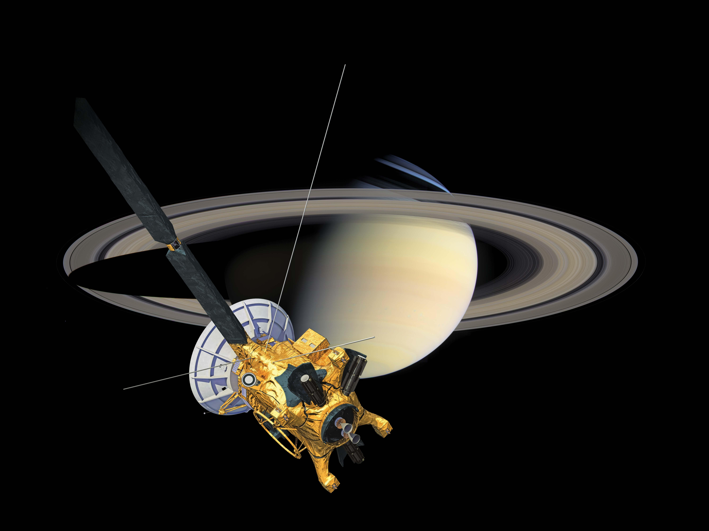

Cassini
Cassini was designed to conduct the first in-depth, up-close study of the Saturn system from orbit, exploring the planet's atmosphere, rings, magnetosphere and moons. Cassini also carried Europe's Huygens probe to its rendezvous with Titan.
Among the most surprising discoveries were geysers erupting on Enceladus and the dynamic effects of it and other moons on Saturn's rings. Cassini's observations of Saturn's largest moon, Titan, have given scientists a glimpse of what Earth might have been like before life evolved.
Launch Date: 15 October 1997
Mass: 5.574kg